Christian Alex
UX/UI Designer
Este projeto se define por um sistema de monitoria para alunos, monitores, coordenadores e professores tem como objetivo oferecer uma plataforma online para facilitar a comunicação e o acompanhamento das atividades de monitoria em uma instituição de ensino. Abaixo estarão detalhados as etapas realizadas no desenvolvimento do projeto. Os objetivos do projeto foram definidos através de um briefing direto com o cliente, que por sua vez, solicitou que o projeto devesse ser produzido como uma plataforma digital. Participei deste projeto como Designer de UI e UX, além de definir conceitos de branding.
Objetivo 1: Conhecer os papéis envolvidos e as necessidades de cada um.
Objetivo 2: Desenvolver um sistema digital que auxilie os papéis de acordo com suas necessidades.
Para elaboração do projeto as 5 etapas abaixo foram utilizadas.
Entender
Analisar
Criar
Prototipar
Validar
Na primeira etapa foi realizado o entendimento do projeto e dos usuários, com o auxílio de uma Matriz CSD foi possível de guiar os participantes e alinhar as expectativas do produto final. Além disso, foi possível mapear as principais dúvidas em relação ao projeto e aos usuários.
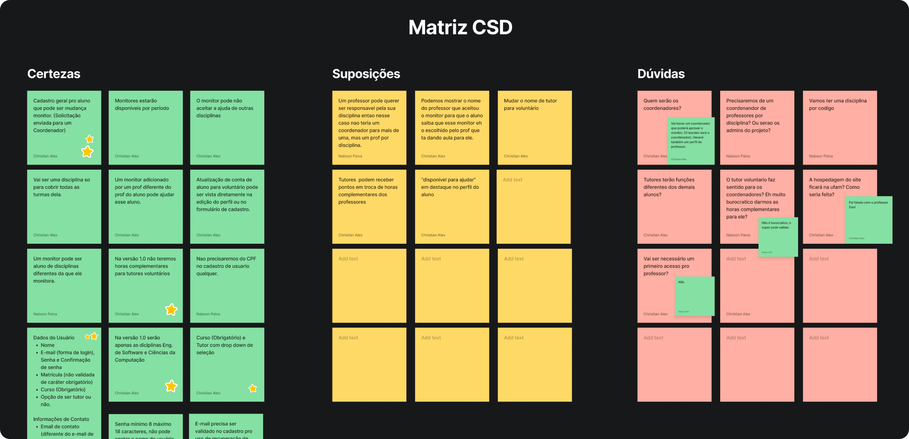De acordo com as dúvidas e as suposições levantadas na matriz sobre o projeto as seguintes questões se alinharam aos objetivos.
- Qual a necessidade de uma plataforma digital?
- Como um processo de monitoria é feito atualmente e qual o impacto de uma plataforma digital?
- Qual o público-alvo do sistema? Qual a necessidade dos envolvidos do sistema?
Para responder as perguntas acima, foi aplicado um formulário para:
Os alunos, onde o objetivo era entender suas dificuldades no formato atual de agendar uma monitoria caso precisasse.
Os monitores, onde teve um objetivo similar ao do usuário aluno.
Os professores, para saber como eles gerenciam as monitorias realizadas.
Além do formulário, foi realizado uma pesquisa de similares apoiado em uma análise SWOT dos produtos a fim de entender como as demais instituições tratam desse problema e como é feito o processo de agendamento. Dentre os produtos pesquisados estão: Toolzz Mentor, Mentor Cruise e Trello.
O sistema tem como cliente principal o coordenador, então uma entrevista foi realizada com o intuito de mapear suas necessidades para o sistema.
Resultado dos Formulários
Com o intuito de captar o interesse dos usuários, foi utilizado um formulário semi-aberto (com perguntas fechadas e abertas) permitindo assim que fossem entendido quantas pessoas tinham interesse na plataforma. Também foi possível captar como as pessoas se sentiam em relação à ideia proposta no projeto e como isso impactaria no dia-a-dia deles. Como resultado das entrevistas, foi possível notar que:
Usuário Aluno
gostariam de ter um meio digital para agendar suas monitorias;
preferem aprender online;
tem dificuldade para agendar com alunos no método convencial;
Usuário Monitor
gostariam de ter um meio digital para agendar suas monitorias;
preferem ensinar online;
tem dificuldade para agendar com alunos no método convencional;
Usuário Professor
acredita que uma plataforma digital os ajudaria a gerenciar melhor seus monitores;
tem interesse em usar uma plataforma digital;
Personas
Pedro
Idade: 20 anos
Curso: Engenharia de Software
Nível de experiência: Iniciante
Motivação: Pedro é um aluno dedicado, mas tem dificuldade em entender alguns conceitos do curso. Ele está procurando um monitor para ajudá-lo a esclarecer suas dúvidas e melhorar seu desempenho acadêmico.
Necessidades: Pedro precisa de um sistema de monitoria fácil de usar e acessível, com recursos como notificações automáticas, integração com calendários e comunicação fácil com o monitor.
Luana
Idade: 23 anos
Curso: Ciência da Computação
Nível de experiência: Avançado
Motivação: Luana é uma estudante avançada que está procurando uma oportunidade para compartilhar seus conhecimentos e ajudar outros alunos a ter sucesso no curso. Ela está procurando um sistema de monitoria que seja fácil de usar e eficiente, com recursos para facilitar a comunicação com os alunos e o gerenciamento de suas sessões de monitoria.
Necessidades: Luana precisa de um sistema de monitoria que permita que ela consiga contatar os alunos e que forneça acesso a informações relevantes. Ela também precisa de uma maneira fácil de gerenciar suas sessões de monitoria.
Gabriela
Idade: 35 anos
Curso: Engenharia de Software
Nível de experiência: Avançado
Motivação: Gabriela é uma professora dedicada que quer ajudar seus alunos a ter sucesso no curso. Ela está procurando um sistema de monitoria que possa ajudar a acompanhar o desempenho dos alunos e dos monitores da sua turma.
Necessidades: Gabriela precisa de um sistema de monitoria que forneça informações sobre os agendamentos realizados. O sistema deve permitir que ela possa gerenciar quais alunos podem ser monitores de sua disciplina diretamente pela plataforma.
Juliano
Idade: 40 anos
Curso: Gestão Administrativa
Nível de experiência: Mediano
Motivação: É um coordenador de curso acadêmico comprometido com a qualidade da formação dos alunos sob sua responsabilidade. Com formação em Pedagogia e Mestrado em Educação, Paulo é apaixonado por seu trabalho e sempre busca formas de melhorar a experiência de aprendizagem dos estudantes. Ele busca um sistema que permita que ele possa acompanhar as monitorias realizadas, bem como data, horário e envolvidos.
Necessidades: Juliano precisa de um sistema de monitoria que o permita realizar o cadastro e o gerenciamento das disciplinas existentes na universidade. Além disso, o sistema deve permitir que ele possa adicionar professores responsáveis por estas disciplinas. O sistema precisa trazer dados das monitorias realizadas, a fim de se ter um relatório detalhado do desempenho de cada aluno.
Análise SWOT
Análise da Toolzz Mentor, uma plataforma online para agendamento de monitoria:
Forças:
Personalização: oferece recursos avançados de personalização que permitem aos usuários configurar o agendamento de monitoria de acordo com suas necessidades.
Recursos específicos para agendamento de monitoria: tem recursos específicos para gerenciar agendamentos de monitoria, como atribuição de tarefas e acompanhamento do progresso.
Interface intuitiva: aparenta ser fácil de usar que permite aos usuários configurar e gerenciar agendamentos de monitoria sem complicações.
Fraquezas:
Dependência da Internet: como uma plataforma online, a plataforma depende da Internet para funcionar adequadamente, o que pode ser um problema se a conexão estiver lenta ou interrompida.
Integrações limitadas: a plataforma pode não ter tantas integrações com outros aplicativos populares como outras ferramentas de gerenciamento de tempo.
Oportunidades:
Crescimento do mercado de educação online: com o aumento da demanda por soluções de educação online, há uma oportunidade de crescimento.
Integrações com outras ferramentas: pode explorar parcerias com outras ferramentas de gerenciamento de tempo ou aplicativos de produtividade para expandir seu alcance e funcionalidade.
Recursos adicionais: pode continuar a adicionar recursos adicionais, como análise de dados e relatórios para fornecer mais insights sobre o progresso da monitoria.
Ameaças:
Tecnologia em mudança: a tecnologia está sempre mudando, então pode haver novas ferramentas ou soluções de gerenciamento de tempo que podem ameaçar a posição plataforma como uma ferramenta popular para agendamento de monitoria.
Após os dados analisados, foi possível mapear requisitos de usabilidade para o sistema, onde esses foram pontos de partida para a interface a ser desenvolvida.
Requisitos de Usabilidade
Facilidade de uso: o sistema deve ser fácil de usar e navegar, com um layout claro e intuitivo que permita aos usuários realizar suas ações com rapidez e eficiência.
Feedback constante: o sistema deve fornecer feedback aos usuários sobre suas ações através de respostas pela plataforma.
Compatibilidade com dispositivos móveis: o sistema deve ser compatível com dispositivos móveis para permitir que os usuários acessem a plataforma.
Notificações automáticas: o sistema deve enviar notificações automáticas por e-mail para avisar os usuários quaisquer informações relevantes.
Facilitar o contato entre os usuários: o sistema deve fornecer uma maneira fácil para que os usuários tenham acesso aos dados de contato após o agendamento da monitora.
Após uma curta sessão de brainstorm, foi possível definir o nome da marca que deveria ser aplicada ao sistema e seu estilo. Como requisito era necessário apresentar as cores presentes na marca da universidade na qual o sistema seria apresentado. Logo, o verde e o os tons de cinza grafite se complementam na identidade visual da marca.
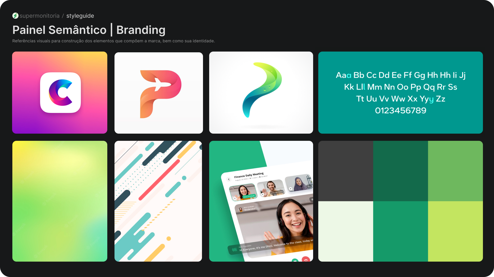Com o apoio de um painel semântico foi possível buscar referências que atendesse ao estilo definido durante o brainstorm. Após isso os desdobramentos como cores, aplicação, tipografia foram escolhidos para construir uma identidade coesa.
Identidade Visual
Como conceito é apresentado um símbolo que se assemelha à um “S”, de forma ambígua também representa um formato de raio. Desta forma é reforçado a palavra super, que faz referência nos heróis que podem ser encontrados no produto. A tipografia sem serifa utilizada na marca apresenta formas circulares com o apoio de retângulos, deixando seu caráter mais moderno. Como construção foram utilizadas letras em caixa baixa, a fim de criar uma forma visual coesa junto do elemento principal.
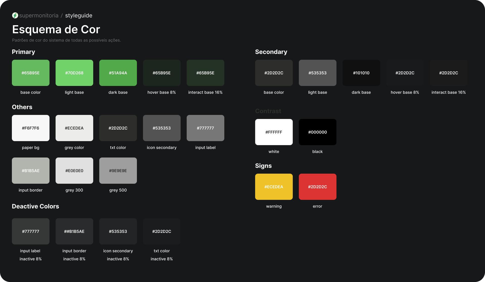As cores fazem reforço ao programa onde foi concebido, o IComp (UFAM), tem como padrão o uso de tons verdes, que por sua vez, tem forte apelo à amazônia e flora da região. Tendo isso em mente foram adaptados os tons amarelados em gradiente sobre o verde, onde é reforçado o moderno e o dinamismo da marca.
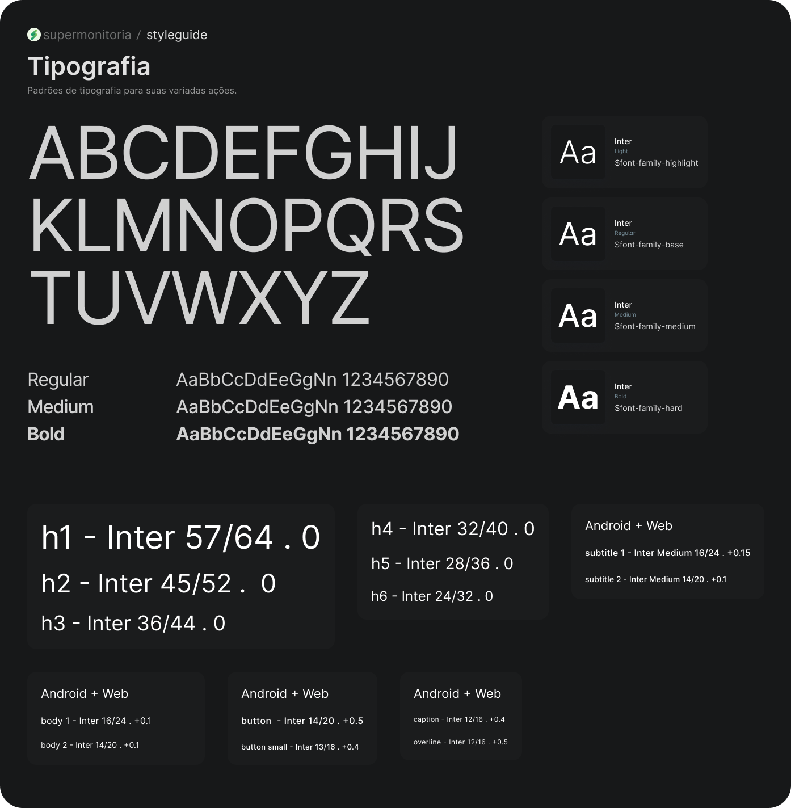Como fonte de apoio em diversos materiais é utilizada a família Inter, que apresenta um conceito similar ao do proposto na marca. Seu diferencial está no formato retangular que serve para construir textos complementares que não se destacam mais do que a própria marca.
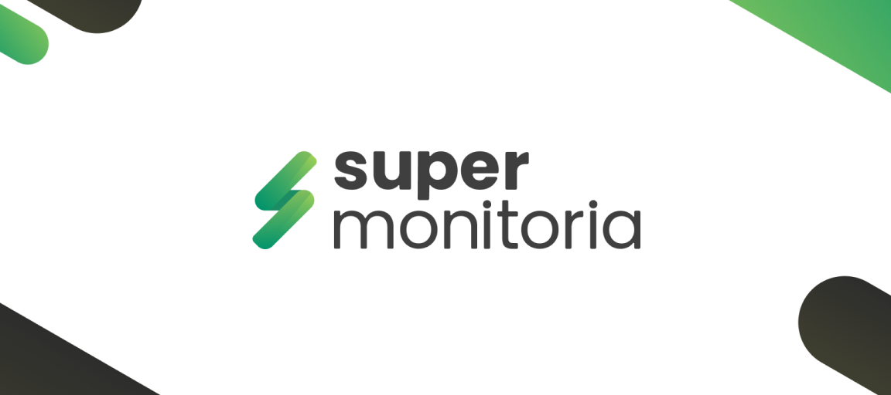Como aplicação final foram utilizados elementos arredondados, similares aos presentes na marca. Sua disposição de modo invertido direcionam o olhar ao centro e apresentam a sensação de movimento em conjunto com o elemento central. As cores dos elementos são utilizados de acordo com os que já estão presente na marca, reforçando seu conceito e estilo.
Sitemap e Fluxos de Usuário
Juntamente com a elaboração da identidade visual foi possível criar os primeiros fluxos do sistema. Com o auxílio de um site map simplificado, tivemos uma visão ampla das funções do sistema e como aconteceria a interação entre eles.
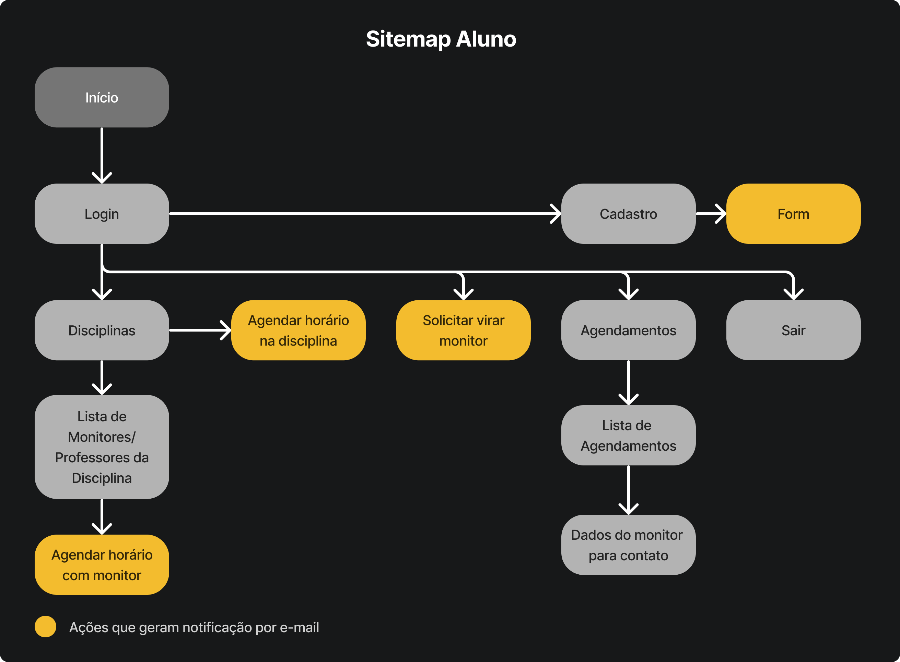 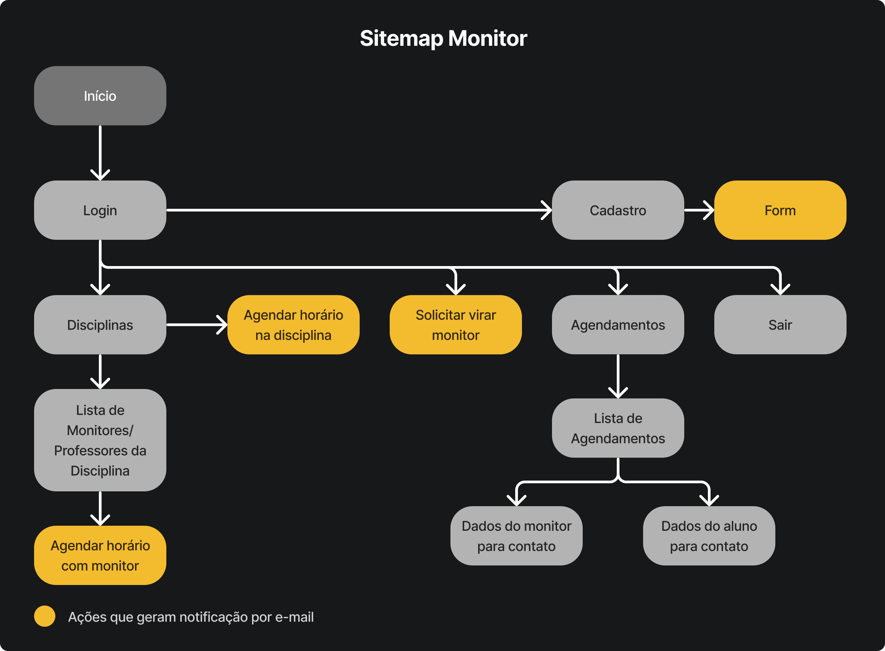 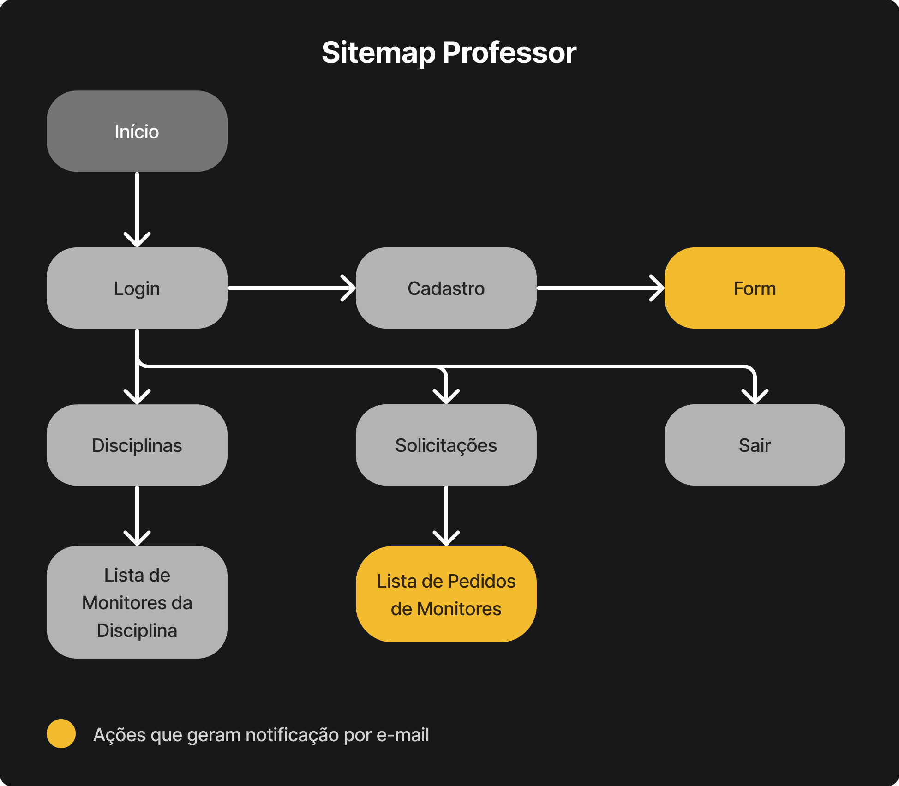 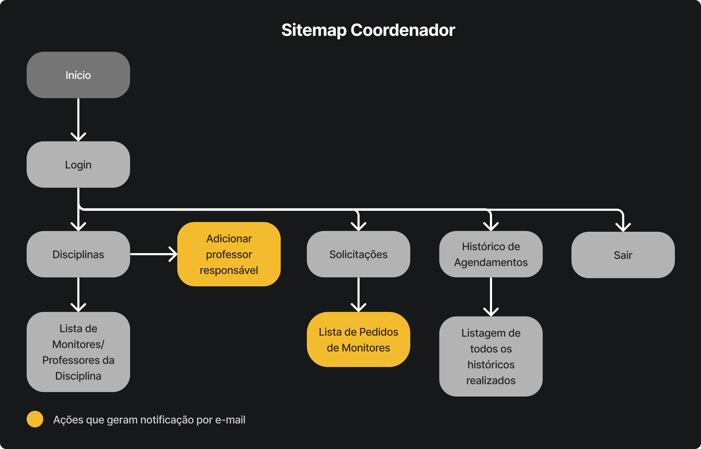Alguns fluxos de ação para o usuário foram estruturados, com ele foi possível mapear telas de erro, definir componentes e como o sistema de e-mails deveria ser aplicado.
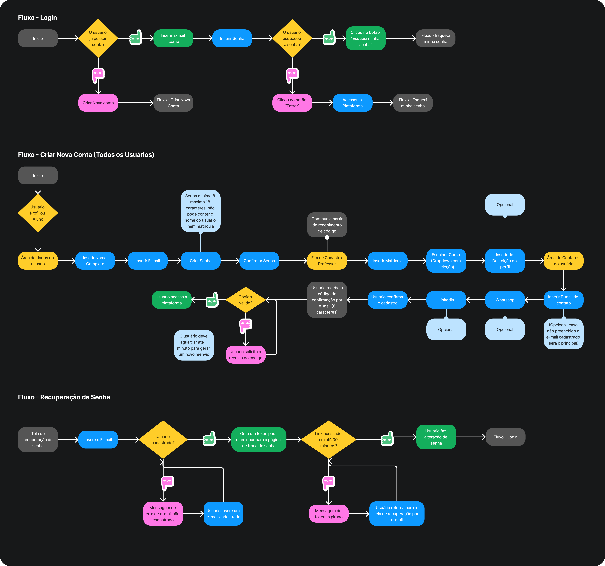Após a construção dos fluxos foi possível iniciar a criação das telas em protótipos de baixa fidelidade. Acima estão alguns exemplos das diversas telas criadas para os usuários. A tela disciplinas, teve duas versões que foram testadas posteriormente, o teste e os resultados estão na seção de validação.
Componentes da Interface
Como base para criação foi utilizado pelo time de front-end a biblioteca open source MUI. De acordo com os componentes já listados, ajustes visuais foram feitos para se adequar à um estilo próprio da marca. A iconografia também foi utilizada de acordo com a biblioteca após um consenso com todo o time, pois assim haveriam menos conteúdos a serem carregados no servidor do sistema, priorizando a performance do produto.
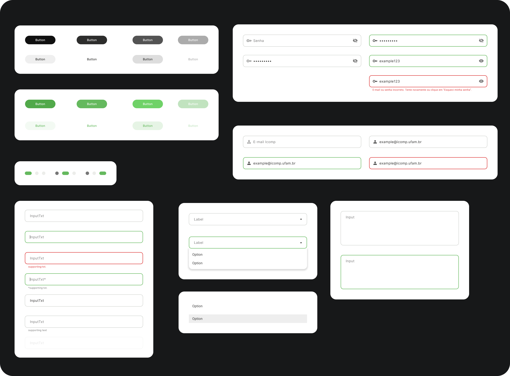Resultado final
O projeto teve como demanda a criação de um sistema de monitoria para os usuários aluno, monitor, professor e coordenador, a partir das suas necessidades e do alinhamento com as demandas, foi criar um sistema online de monitoria que permite que cada usuário tenha um papel importante dentro dele. Devido a grande quantidade de conteúdo, estarei resumindo o resultado final apenas aos usuários aluno/monitor, porém caso você deseje, estarei disponibilizando todas as telas do sistema.
Como aluno o usuário pode:
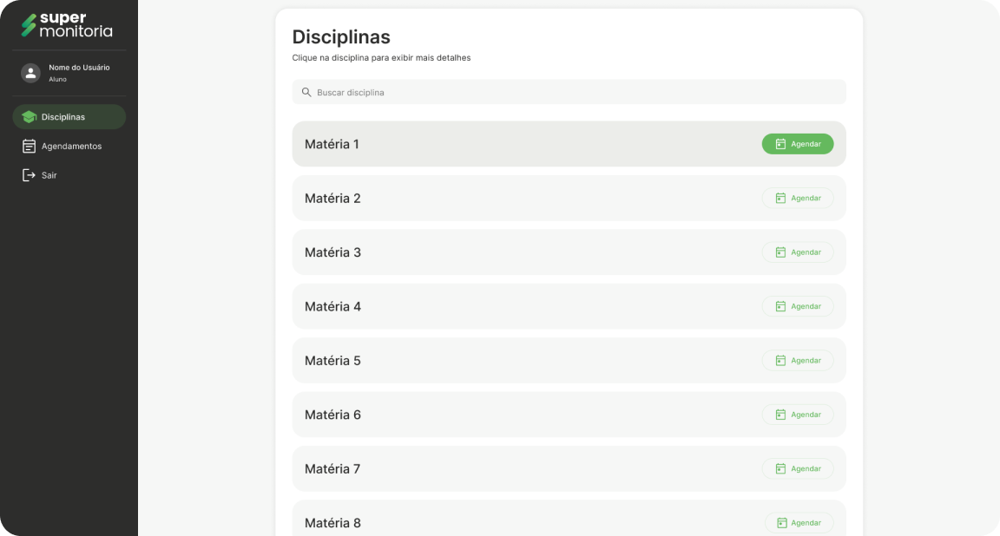Visualizar as disciplinas do semestre e agendar diretamente da tela principal
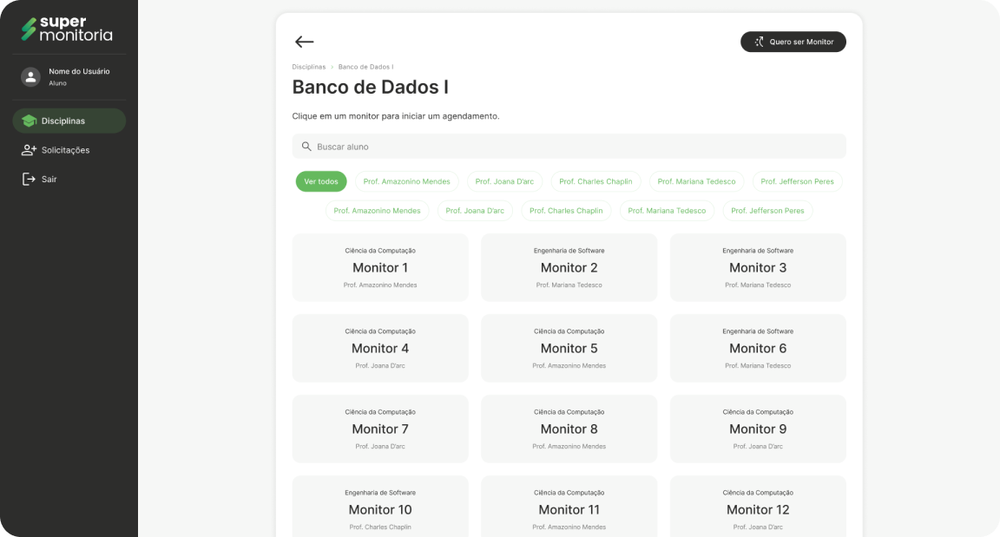Clicar em uma disciplina e agendar com um monitor específico
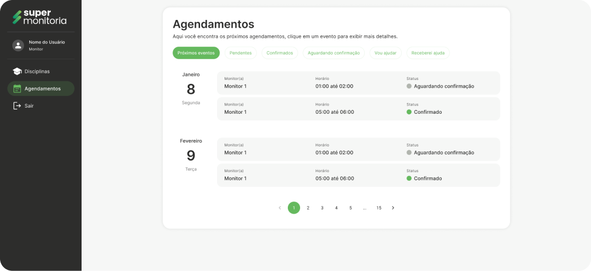Visualizar os agendamentos já marcados e pendentes
Como monitor, além das funções acima, o usuário pode:
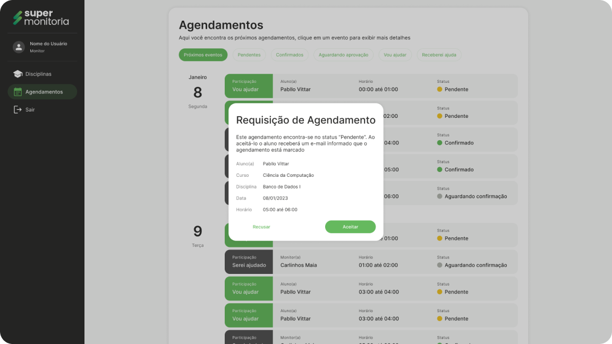Aceitar solicitações dos alunos
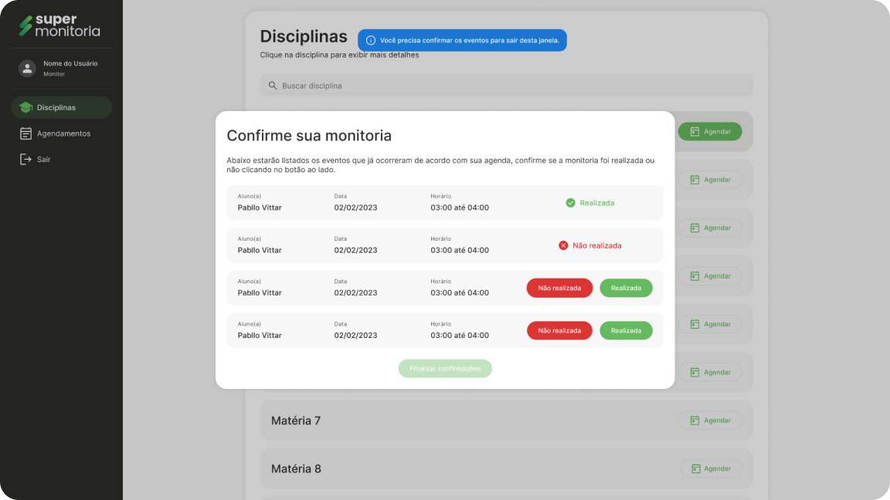Confirmar agendamentos ocorridos
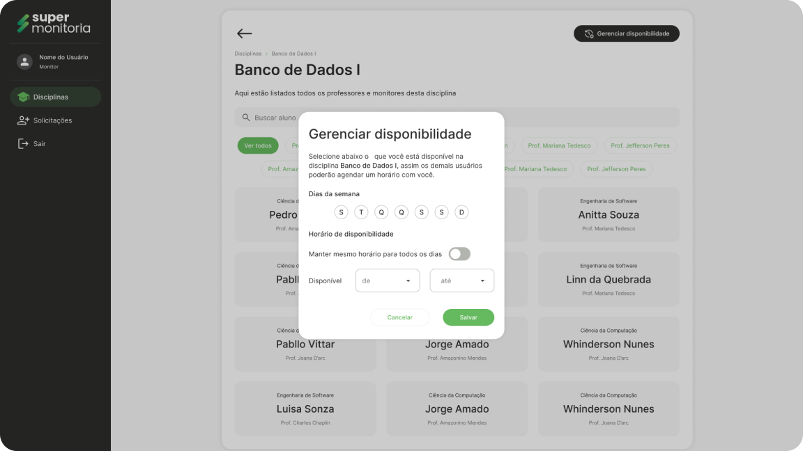Informar sua disponibilidade no sistema
Para chegar ao resultado final dos componentes e fluxos principais dos usuários aluno/monitor, foi realizado um teste de usabilidade que teve como objetivo validar entre duas opções a facilidade de entendimento do fluxo e dos componentes da interface. O teste teve como foco o segmento de jovens entre 18 e 25 anos, usuários recorrentes de produtos digitais e estudantes/ex-estudantes da Universidade. Para o teste foi utilizado:
Um roteiro;
Um protótipo de alta fidelidade do sistema para ambas as opções;
Uma planilha para o acompanhamento do teste e tabulação de pontos;
O teste foi feito de forma online, onde pude estar acompanhando o usuário interagir com a tela juntamente com o software figma. Após a realização de cada tarefa o usuário atribuía uma nota e a partir desta nota era possível medir a facilidade do uso e o entendimento dos componentes.
Com as pontuações traduzidas, todas as interfaces testadas atenderam ao seu objetivo. A tela principal que apresenta duas opções obteve um destaque na Interface 2.
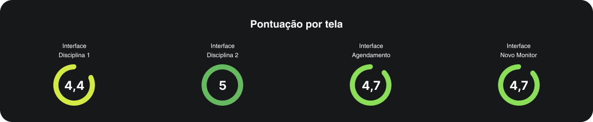Por fim, durante a realização das atividades foi possível mapear os pontos positivos e negativos de cada interface.
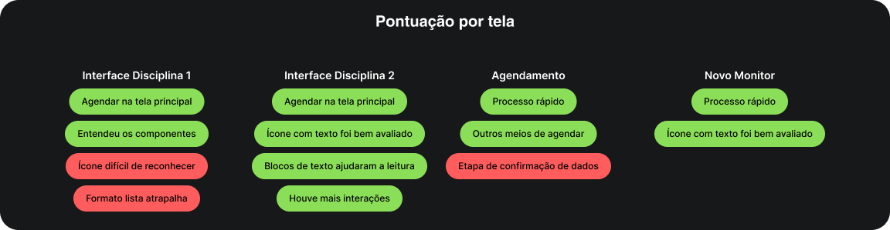Para fins de entendimento, as telas que foram testadas foram as seguintes:
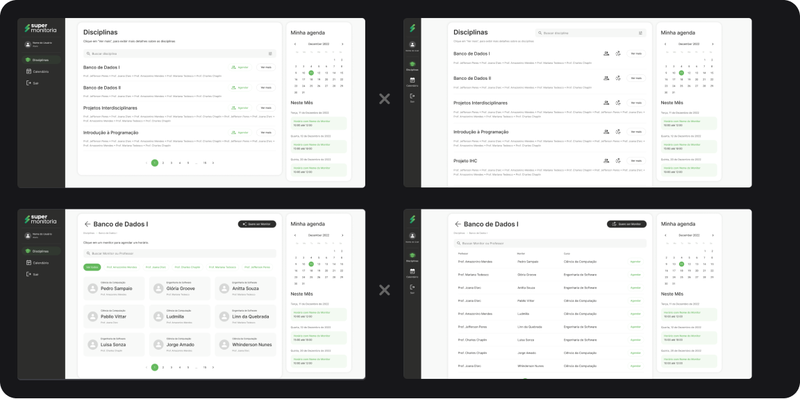Com isso foi possível aprender alguns pontos interessantes sobre as interfaces propostas:
Listagem de monitores para os alunos tem um tempo maior de escaneamento, o que leva no cansaço na busca;
Ícones com textos acompanhados por hover não funcionam bem caso o usuário não entenda o que o ícone significa;
Blocos de informação ajudam na leitura e no entendimento;
Lista de botões pode causar confusão na sua função;
Ainda há um teste de usabilidade 2 que ainda está em construção, mas por enquanto que tal acessar a landing page que criei para esta plataforma?
Veja também outros projetos

Uni
Projeto Universitário
Um dispositivo digital que auxilia adolescentes com TDM (Transtorno Depressivo Maior), aliado ao conceito do design emocional, busca estimular o usuário na prática de atividades cognitivas e interações sociais.

Amor de Bicho
Estudo de Caso
Uma concepção de produto digital que serve como central para ONG's de adoção de animais, possibilitando que haja anúncios, acompanhamento veterinário e dashboard de dados para ONG's.